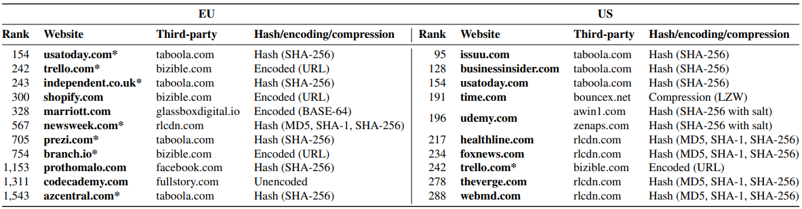
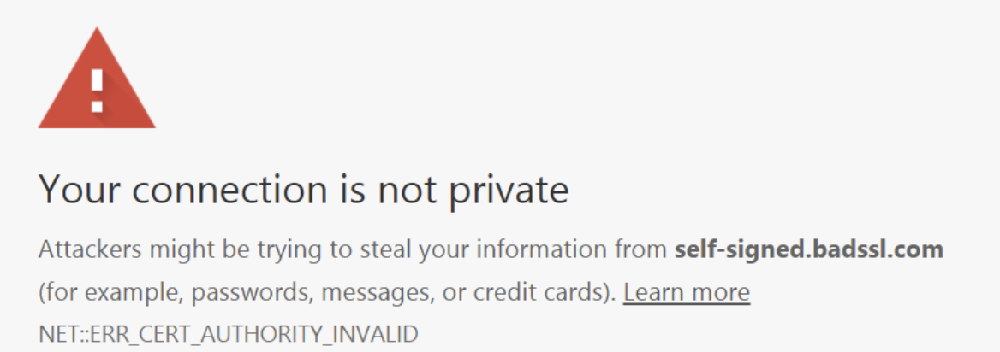

In part 1, we saw what is a cookie and problems how it impacted heavily privacy. It causes legal compliance problems, and bring a bias on collected data between 10 and 40%, with big difference on mobile. In part 2, we saw that blocking trackers is easy, by using some browsers or protecting its own network (like big companies do). It concerns around 30% of traffic.
On this section, we’ll deal with the advertiser side, and what trackers involve in term of security both on IT and legal compliance.
IT security
How cookies impact IT security
Fact of loading javascript
Tag managers : a Trojan horse in the website.
Governance issue : who controll & decides what information can be shared ? IT architects or campaign experts/programmatic in media agencies ?
Data leaks
A study from KUL Leuven audited 100 000 websites, and found that trackers leaked sign up details for 3% of them in Europe. Third party scripts scan information on forms, and collect information as email (and even password in some case).
Our analyses show that users’ email addresses are exfiltrated to tracking, marketing and analytics domains before form submission and without giving consent on 1,844 websites in the EU crawl and 2, 950 websites in the US crawl.

Well known third parties (Taboola, Facebook) ar in the list of leakers.
 Most advertiser don’t understand the third party code they put on their website, nor its effects on security of data. However, they are held responsible for processing of those data.
CNAME hack : Boursorama case
A blog reveiled a security hole in the usage of adtrackers, putting at risk the access to banking website of 2 million users. How ?
What is the CNAME hack
To avoid ATP/ETP problems, Boursorama wanted to consider third party trackers like first party. It’s possible to do via their URL : putting a “CNAME” in the DNS (a link from boursorama to trackers’s domain). It’s like saying browsers “Google is a part of Boursorama, trust everything coming from Google like a Boursorama asset”. (The responsible who decided to apply this hack didn’t fully understand IT security or didn’t have trust issues).
Safari, Firefox and adblockers consider the trackers behind boursorama.fr as first party, and therefore allow them.
Consequences
That means the adtech provider is considered as first party, and therefore has access to all first party cookies from Boursorama. Those first party cookies may include security informations like usernames, security tokens and other identifiers (this is the process that allows you to stay connected between two pages). In that case, those information were sent (leaked) to Smart Adserver, AT Internet and other adtech providers. People that have access to those information in Smart Adserver could log in to banking account of Boursorama
If the temptation to consider “third party” trackers as first party is high (resolving the problem of adblocking and ITP/ETP), it has severe consequences on security.
Legal security
Tracking brings also legal risks on the advertiser.
Unilateral contractualisation
We can easily understand that Meta or Google can not make bilateral contracts with every advertiser. How many laywer would they need to contractualize with 10 million clients ? It means they provide a terms and condition that you must accept by clicking on a button.
- In the process, are really advertisers that accept those terms and conditions ? Or their agencies?
- Do they even read them ?
- the code needs to be governed. Dependencies must be managed and regularly checked. Calling for gtag.js on a google server does not allow that governance.
- There is no legal protection. Or any service level agreement. If the tracker crashed the site or leak data, without any contract, there is no legal remediation possible.
I personnally made the experience : the adtech provider didn’t renew its SSL certificate on a dependency of the tracker : the whole website of my employer was defined as “not secured” by every browsers, with a “your connection is not private” message. Without a balanced SLA, the provider is not obliged to fix the problem within an acceptable timeframe (“acceptable” can differ from industries), and the loss is for the advertiser

A problem for GDPR
A controller is by default responsible for the data processed in his name. In case of data breach, he must face consequences. To frame that problem, Art 28 of GDPR describes what a controller (advertiser) and processor (adtech company) must write in their contracts. The standard terms & conditions have to be audited, and if necessary, negociated with the processor to include art 28’s clauses. In the case of GAFA’s, negociate contracts for a tracker is nearly impossible for most advertisers.
Moreover, the pages which contain trackers must be chosen carefully. If they contain personnal data, trackers have access to them.